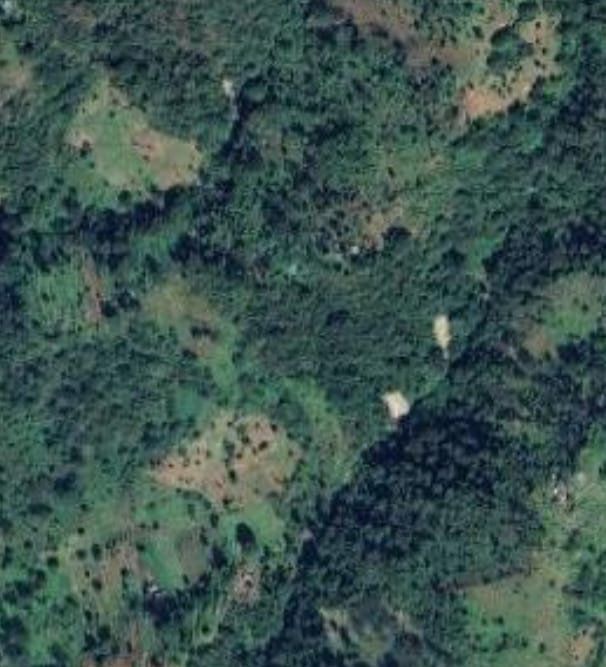
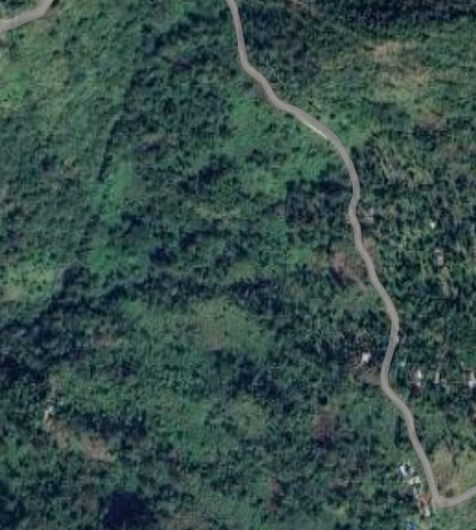

National Technical Research Organization

Before
After
Coverage Area Coordinates:
Top Left Coordinate: Latitude: 18.692135, Longitude: 77.0139
Top Right Coordinate: Latitude: 18.66562, Longitude: 78.7418
Bottom Right Coordinate: Latitude: 17.089724, Longitude: 78.7089
Bottom Left Coordinate: Latitude: 17.113861, Longitude: 76.9961
Center Coordinate: Latitude: 17.892266, Longitude: 77.8652
Road Width: 3.75 meters
Sensor Specification: Sensor Model: R2A_LIS3_-_F_L2, Sensor Imaging Mode: Satellite_Sensor_ImagingMode_Subscene_Product
Scene Specification: Scene Identifier: 025306_99 60, Ground Orbit Path/Row: Not specified